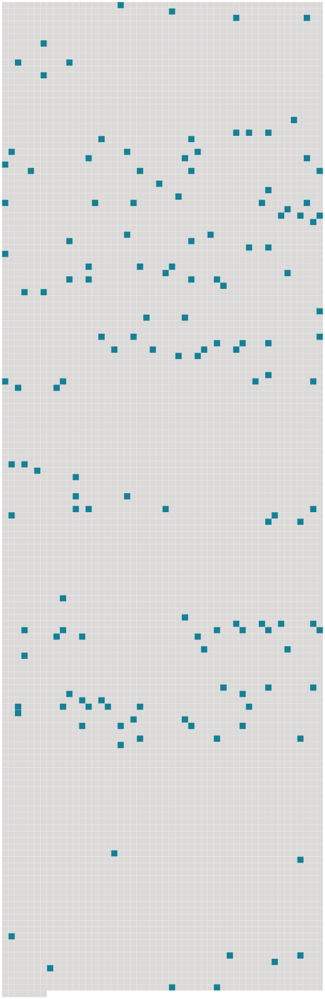

Longueur nb maillons : 144 mentions |
 |
Le 3 octobre, au sortir de la baie de New-York, elle écrivit à Rebecca : [4 phrases] On [nous] menace d'une tempête, mais avec Lui je ne crains rien. [2 phrases]
Après avoir passé les îles Açores, elles écrivait à sa belle-sœur : [3 phrases] Vous me comprenez, parce que vous savez combien sont heureux ceux qui se reposent en [notre] Père céleste. [5 phrases]
C'est en mer, à la date du 14 novembre qu'Élisabeth écrivit le solennel engagement qui suit : C'est pourquoi, s'il plaît à [notre] Père céleste de me ramener encore au milieu des miens, je ferai chaque jour le sacrifice de mes plus innocents désirs, de crainte qu'ils ne me détournent du vœu solennel et sacré que je viens de prononcer. [9 phrases] Dans la matinée, on nous apprit qu'un bateau se trouvait par le travers de notre navire ; je volai sur le pont, et aussitôt apercevant le cher Carleton, venu à [notre] rencontre, j'allais me précipiter dans ses bras, quand un garde que je remarquai pour la première fois, s'écria : N'approchez pas!! [2 phrases] Pendant que [nous] faisions [nos] apprêts pour [nous] y rendre, la troupe de musiciens, qui s'empresse toujours au-devant des étrangers, est venue jouer sous la fenêtre de [notre] cabine le Hail Columbia, et ces petits airs que les enfants chez [nous] chantent en dansant …… [2 phrases] « Un bateau parut, remorqué par une barque à quatorze rames, et on [nous] fit entrer dans le bateau. Le lazaret étant à quelques milles de la ville, on [nous] ramena au large. Après une heure de navigation, [nous] arrivâmes devant les chaînes qui barrent l'entrée du chenal par lequel on a accès dans la place. Ces chaînes s'abaissent à un signal donné successivement par plusieurs cloches ; [nous] passons sous des murailles plus hautes que les fenêtres d'un second étage ; [nos] marins, après beaucoup de cris et de disputes, finissent par s'accorder sur le lieu de [notre] débarquement ; [notre] bateau s'arrête. De nouveaux tintements de cloches amènent un garde, et puis un autre ; et, environ une demi-heure plus tard, celui que l'on appelle ici Monsieur le capitano, qui, après maintes consultations, maints chuchotements à l'oreille de son lieutenant, dit que [nous] pouvions prendre terre. Sur quoi, tout l'équipage s'étant retiré, un garde [nous] indique avec sa baïonnette le chemin que [nous] devons prendre. À ce moment, un ordre écrit du commandant, de la barque qui venait de [nous] remorquer fut expédié au capitano, qui reçut ce papier au bout d'un bâton ; et on alluma du feu, pour le faire passer à travers la fumée avant de le lire. [1 phrases]
La personne qui a fait cet office et qui a visité [nos] matelas sera soumise à une quarantaine aussi longue que la nôtre. [3 phrases] [Nous] fûmes conduits juste en face des fenêtres de la maison du capitano, où était venue Mme Filippo Filicchi. [1 phrases]
Il y avait la grille devant [nous] ; je crains pourtant de n'avoir pu cacher ma fatigue de corps et d'esprit. « Pour commencer, on [nous] a offert des sièges ; ou plutôt, on en a placé à [notre] portée. À présent que [nous] les avons touchés, il n'est plus permis de les rapporter à la maison. Après, on [nous] a montré la porte par où [nous] devions entrer : n ° 6 ; un escalier de pierre, vingt marches roides à monter ; une grande chambre voûtée, très haute, aussi haute que le plafond de Saint-Paul ; le pavé en briques ; les murailles toutes nues. Le capitano [nous] a envoyé trois œufs à la coque, une bouteille de vin et quelques tranches de pain. [1 phrases] [Nos] sirops, [nos] gelées, [nos] potions qu'il fallait lui donner d'heure en heure, à bord du vaisseau, où sont -elles?? [1 phrases] J'ai découvert auprès de [notre] chambre un petit réduit, où j'ai été m'agenouiller un instant. [3 phrases]
elle ne fut pas longue à trouver un bout de corde qui avait lié une de [nos] caisses, et elle s'est mise à sauter ; le froid [nous] faisait grelotter sur ce pavé de briques, dans cette grande chambre aux murailles nues. « À la tombée de la nuit, les excellents Filicchi [nous] ont envoyé de quoi dîner, et, en même temps, plusieurs choses de première nécessité. [Nous] sommes retournés à la grille pour les voir. [1 phrases] Je me confie en Dieu, espérant qu'après avoir donné à mon pauvre malade la force de résister à l'épreuve d'une telle journée, il [nous] assistera pour [nous] faire aller plus loin. Il est vraiment [notre] tout …… [4 phrases]
mais Dieu est avec [nous] « Oui, Dieu est avec [nous] ; et « si [nos] souffrances abondent, ses consolations surabondent et surpassent toutes paroles. [1 phrases] Si dans ce vent qui se déchaîne et mugit dans la cheminée avec un bruit de tonnerre, qui éteint presque [notre] lumière et s'abat sur William par toutes les fentes des murs ; si dans tout cela, [nous] ne voyions pas l'effet du vouloir de Dieu ; si dans le délaissement de [notre] situation, [nous] ne voyions pas l'accomplissement des desseins de Dieu qui règle tous les événements de [notre] vie, vraiment [nous] serions bien à plaindre. [2 phrases] que dirons [-nous] ?? [1 phrases] Que le Seigneur, qui la permet, [nous] soutienne et [nous] fortifie. [9 phrases] On venait de tirer les verrous de [notre] porte ; le pauvre Filippo, dans sa peur d'approcher de trop près, avait déposé une jatte de lait pour [nous] , sur le seuil de [notre] chambre. [6 phrases] Le commandant est venu [nous] apporter la nouvelle que [notre] quarantaine est abrégée de cinq jours. [1 phrases]
[Notre] réponse n'a été qu'une suite de sanglots, aussi n'a-t -il pas tardé à s'éloigner. [1 phrases] Après qu'il [nous] eut quittés, [nous] avons récité de [nos] chères prières autant qu'en a pu suivre William. [1 phrases] On [nous] a envoyé de la ville [notre] dîner et un serviteur qui restera avec [nous] tout le temps de [notre] quarantaine. [1 phrases] Il a des yeux bleus dont le regard passe tour à tour de la gaieté à la tristesse, comme s'il voulait [nous] plaindre et [nous] ranimer en même temps. [5 phrases] “ On a tiré les verrous d'une autre porte, et l'on a donné à Luigi un logement à part, à côté de [nous] Maintenant, qu'il est entré dans [notre] chambre et qu'il a touché ce que [nous] avons touché, il est devenu pour eux tous un objet de terreur.
Que de fois, dans une seule journée, ce pauvre vieillard monte et redescend [nos] vingt marches roides, presque perpendiculaires, pour [nous] procurer ce qui [nous] est nécessaire, ou pour [nous] apporter quelque soulagement! [24 phrases] Fait la lecture pour lui — Écouté Anna — Rangé, mis tout en ordre ; [notre] Luigi [nous] a apporté un élégant bouquet de jasmins, de géraniums et d'œillets. [3 phrases] Un vent impétueux ; il aurait certainement renversé [nos] murailles, si quelque chose pouvait les renverser. [2 phrases] Mon flambeau ne me fait plus peur ; d'ailleurs, autour de [nous] , il n'y aurait rien à brûler que le volet de la fenêtre. [6 phrases] Il n'est plus en état d'aller jusque vers eux ; on les admet au seuil de [notre] porte. Le bout du bâton de [notre] capitano avertit mon pauvre William de demeurer à distance, au moindre mouvement qu'il fait vers eux dans l'ardeur de la conversation. [5 phrases] [Notre] commandant [nous] a encore fait grâce de cinq jours ; le 19 décembre [nous] serons libres. [1 phrases] « [Nous] pleurons et [prions] ensemble, et quand il a épanché sa tristesse, il paraît un peu soulagé. [1 phrases] Une tempête violente, qui fait jaillir l'écume de la mer jusqu'à [notre] fenêtre, ajoute encore à sa mélancolie. [3 phrases] [Notre] chère maison là-bas …… [Nos] chères sœurs … mes chers petits enfants …… [20 phrases] » — [Notre] commandant est venu cet après-midi, et voyant le pauvre William dans un violent accès de fièvre, il s'est : écrié : « Dans cette chambre, que de souffrances j'ai vues déjà!! [4 phrases] » — Mon Dieu, je ne les marquerai pas, [nos] jours ; j'espère qu'ils sont comptés là-haut. [2 phrases] Père de miséricorde et de compassion, Seigneur, [notre] Dieu tout-puissant pour [nous] secourir et [nous] sauver, vous qui [nous] promettez le pardon et [nous] rachetez par les mérites de [notre] adorable Rédempteur, non, vous ne laisserez pas périr ceux pour qui Jésus a répandu son sang précieux. [1 phrases] si [nous] ne connaissions pas [notre] Dieu, si [nous] ne sentions pas ses consolations, si [nous] n'embrassions pas sa radieuse espérance, si [nous] ne trouvions pas [nos] délices dans l'étude de sa vérité et de sa sainte parole, qu'est -ce que [nous] deviendrions?? [4 phrases] Après déjeuner, lu [nos] psaumes à mon William, et le trente-cinquième chapitre d'ïsaïe ; [nous] y avons trouvé un charme tel que cela [nous] a rendus tout joyeux. [13 phrases] — Anna dit : « Encore que [nous] ayons si froid, et que [nous] soyons dans une prison, comme [nous] sommes heureux, en comparaison d'eux!! Et puis, [nous] avons la paix, tandis qu'eux ne font que se quereller, que se battre, et ils crient tout le temps. Le capitano [nous] envoie jusqu'à des marrons et des fruits de sa propre fable ; eux, ils n'ont pas même de pain. » [Nous] avons récité [notre] office de chaque jour auprès du lit de William ; il se figurait que cela arrêterait ses frissons. L'âme de mon William est abattue ; elle a peine à embrasser cette foi qui est [notre] unique ressource. C'est en [notre] Rédempteur qu'il [nous] faut chercher [notre] vie ; mais si [notre] âme est au moment de son départ, oh!! c'est alors qu'il faut [nous] suspendre à lui, par une étreinte encore plus forte ; que deviendrions [-nous] sans lui?? [3 phrases] « [Nous] avons eu la visite du second de [notre] vaisseau, envoyé par le capitaine O'Brien. J'ai été pour lui parler de l'autre coté de la grille ; il avait, avec lui un des matelots qui, lorsque [nous] étions à bord, paraissait [nous] aimer comme sa vraie âme, toujours en mouvement pour [nous] servir et ne sachant qu'imaginer pour [nous] être agréable. [5 phrases] Depuis le jour où [nous] sommes arrivés, j'ai remarqué qu'un des gardiens de [notre] chambre a toujours un air de tristesse et de sympathie quand il [nous] regarde. Je ne comprends pas ce qu'il dit, et il ne m'entend pas non plus ; cependant [nous] nous parlons beaucoup et très vite. [46 phrases] » — Une crise affreuse est survenue, et après, une révolution extraordinaire s'est opérée en lui ; tellement que quelques heures plus tard il ne paraissait pas plus mal que lors de [notre] arrivée au lazaret. [7 phrases] Carleton est venu à la tombée de la nuit ; puis [notre] commandant, tout bon, tout empressé. [28 phrases] [Nos] logements sont retenus à Pise, sur le bord de l'Arno. [4 phrases] Il n'est ni souffrance maintenant, ni défaillance, ni angoisse qui puisse l'empêcher de me suivre chaque jour dans la prière, la récitation de [nos] psaumes, même dans la lecture souvent très prolongée de [nos] Saintes Écritures. [1 phrases] C'est ainsi qu'il a toujours été depuis que [nous] sommes renfermés dans ces murs de pierre ; toujours, excepté ce jour que [nous] avons cru le dernier. [7 phrases] Il parle de ceux que [nous] avons quittés, il regrette surtout [notre] cher Henry Hobart dont les visites et la société lui eussent été une si grande consolation dans l'affliction où il est. |
 |
La ressource peut être téléchargée sur la page Ortolang
Si vous avez des questions ou vous voyez des erreurs, merci d'envoyer un mail à silvia.federzoni89@gmail.com
Site développé par S. Federzoni (contact)